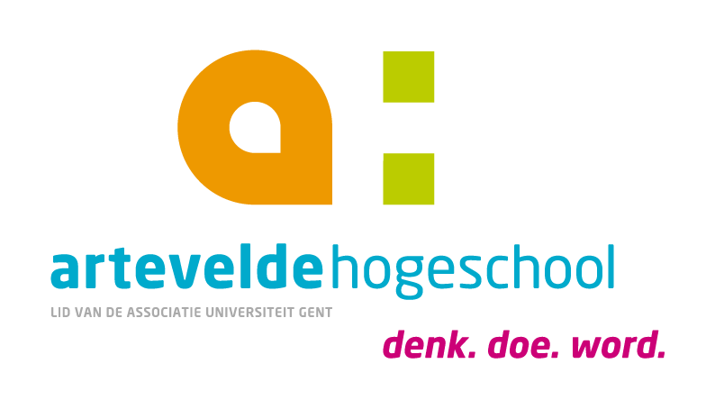

Genderongelijkheid is een probleem dat onze geschiedenis heeft gevormd en dat in de huidige maatschappij nog steeds leeft en meer dan ooit besproken wordt. Deze problematiek is in elke tak van de maatschappij voelbaar en dat was en is niet anders binnen de muziekwereld.
Ooit gehoord van “Clara Schumann”? De kans is groot dat u deze naam nog nooit hebt gehoord. Toch had de muziek van deze Duitse componiste een even grote invloed op de muziekgeschiedenis als de werken van haar welgekende landgenoot Johann Sebastian Bach. Na even te staren naar de muzikale tijdsband op onze campus en het openslaan van een aantal handboeken muzikale opvoeding vonden we nergens een vrouwelijke klassieke componist terug. Dat men de vrouwen van de klassieke muziek vergeten is binnen deze handboeken vinden we in de huidige maatschappij van de 21e eeuw onaanvaardbaar.
Om dit probleem te tackelen, stelden we ons de volgende vraag: “Hoe zetten we vrouwelijke klassieke componisten op de kaart binnen het secundair onderwijs?”. Dit werd onze hoofdvraag. Het resultaat van deze bachelorproef is didactisch materiaal bedoelt om de drempel naar het lesgeven over klassieke componistes kleiner te maken.
Klik op de download knop om het materiaal te downloaden. Muzikale groeten, Arne Claeys en Thijs Vlaeminck.
